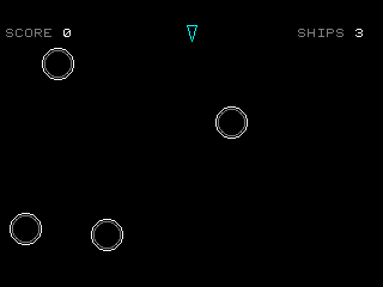
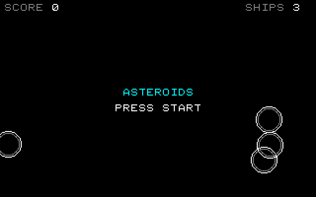
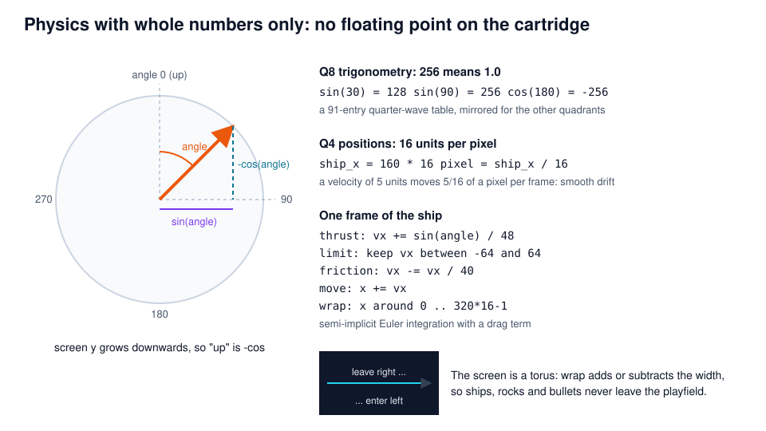
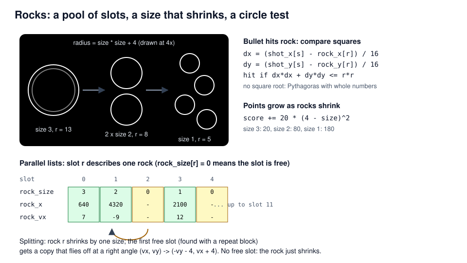
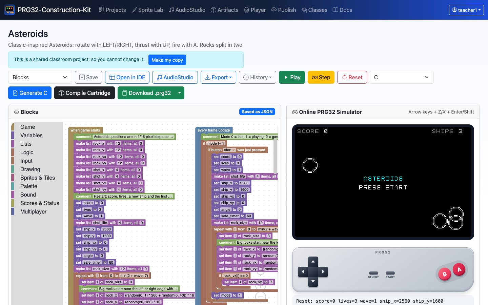
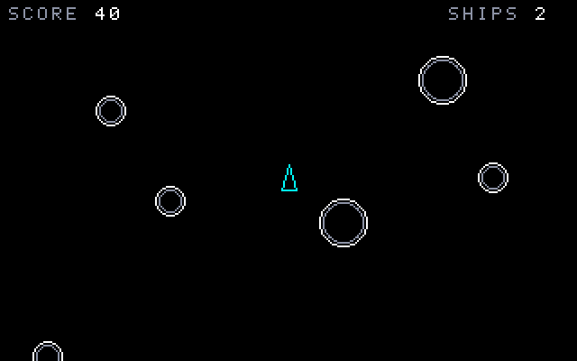

Asteroids
Physics without floating point: angles, inertia and a wrap-around universe
PRG32-Construction-Kit tutorial deck, step by step, from blocks to a RISC-V cartridge.

Learning outcomes
- represent fractions with fixed-point integers (Q4 positions, Q8 trigonometry);
- turn an angle into a direction with integer sine and cosine;
- simulate inertia, thrust and drag with semi-implicit Euler integration;
- use a torus topology: objects leaving one edge enter on the other;
- test circle collisions with squared distances and manage objects in slot pools.
Prerequisites: Pong and Space Invaders tutorials. About 2 hours.
Context
- Atari's Asteroids (1979, Lyle Rains and Ed Logg) drew with a vector display: the electron beam traced lines instead of scanning a raster.
- Its ship obeyed Newton's first law: no brakes, only rotation and thrust. Players had to think in velocities, not positions.
- On a 320 x 200 raster screen we draw the same look with Bresenham lines and midpoint circles, two classic integer algorithms the kit writes into the generated C.
The ESP32-C6 core has no floating-point unit. Fixed-point arithmetic gives smooth motion with whole numbers only.
Original, classic-inspired reimplementation for teaching; not affiliated with the historical products.
Rules and controls
| Button | Action |
|---|---|
| LEFT / RIGHT | rotate the ship |
| UP | thrust |
| A | fire (up to 4 bullets) |
| START | start / play again |
- Big rocks split into two medium rocks, medium into two small ones.
- Smaller rocks give more points: 20, 80, 180.
- After losing a ship you are safe (blinking) for two seconds.
- Clearing all rocks starts a bigger wave.

Whole-number physics

Step 1 - Lists for rocks and bullets
- 12 rock slots and 4 bullet slots, each described by parallel lists (
rock_x[r],rock_vx[r], ...). - A slot is free when
rock_size[r] == 0orshot_life[s] == 0. - Positions are stored x 16:
ship_x = 160 * 16is the centre of the screen.
Step 2 - Rotation and thrust
angleis in degrees; wrap keeps it in 0..359.sin(angle)is between -256 and 256. Divided by 48 it adds at most 5/16 of a pixel per frame to the velocity: a gentle acceleration.- Screen y grows downwards, so "forward" is
-cos(angle).
Step 3 - Drag, speed limit, wrap-around
- Limit: at most 64/16 = 4 pixels per frame.
- Drag: lose 1/40 of the speed each frame (an exponential decay).
- Integrate: position += velocity.
- Wrap: leave right, enter left; the screen is a torus.
/* Speed limit and friction, then move and wrap around the screen. */
if (ship_vx < -64) { ship_vx = -64; }
if (ship_vx > 64) { ship_vx = 64; }
if (ship_vy < -64) { ship_vy = -64; }
if (ship_vy > 64) { ship_vy = 64; }
ship_vx += -ship_vx / 40;
ship_vy += -ship_vy / 40;
ship_x += ship_vx;
ship_y += ship_vy;
if (ship_x < 0) { ship_x += (5119) - (0) + 1; }
else if (ship_x > 5119) { ship_x -= (5119) - (0) + 1; }
if (ship_y < 0) { ship_y += (3199) - (0) + 1; }
else if (ship_y > 3199) { ship_y -= (3199) - (0) + 1; }
if (safe_timer > 0) {
safe_timer += -1;
}Step 4 - Firing from a bullet pool
A bullet starts at the nose (8 px ahead) and moves 6 px per frame plus the ship's velocity: Galilean relativity in two blocks.
Step 5 - Rocks and collisions
Step 5 - Circles without square roots
A point is inside a circle when dx*dx + dy*dy <= r*r. Comparing squares avoids the square root, which a microcontroller would compute slowly.
Distances are divided by 16 first, so the squares stay small and cannot overflow a 32-bit int.
Rocks split in two

Step 6 - The split, in blocks
Step 7 - Losing a ship, next wave
safe_timer counts down 60 frames after a new ship appears: a short invulnerability window, visible as blinking.
Step 8 - Drawing with lines and circles
The three corners are computed with sin and cos of angle, angle + 140 and angle + 220: rotating a triangle is computing three points.
frame() % 8 < 5 makes the ship blink; frame() % 4 < 2 flickers the flame.
Lines in C: Bresenham's algorithm
/* The ship is a triangle of three lines, rotated with sin and cos; it blinks while safe. */
if (mode == 1 && (safe_timer == 0 || prg32_kit_frame() % 8 < 5)) {
prg32_kit_draw_line(ship_x / 16 + prg32_kit_sin(angle) * 9 / 256, ship_y / 16 - prg32_kit_cos(angle) * 9 / 256, ship_x / 16 + prg32_kit_sin(angle + 140) * 7 / 256, ship_y / 16 - prg32_kit_cos(angle + 140) * 7 / 256, PRG32_COLOR_CYAN);
prg32_kit_draw_line(ship_x / 16 + prg32_kit_sin(angle) * 9 / 256, ship_y / 16 - prg32_kit_cos(angle) * 9 / 256, ship_x / 16 + prg32_kit_sin(angle + 220) * 7 / 256, ship_y / 16 - prg32_kit_cos(angle + 220) * 7 / 256, PRG32_COLOR_CYAN);
prg32_kit_draw_line(ship_x / 16 + prg32_kit_sin(angle + 140) * 7 / 256, ship_y / 16 - prg32_kit_cos(angle + 140) * 7 / 256, ship_x / 16 + prg32_kit_sin(angle + 220) * 7 / 256, ship_y / 16 - prg32_kit_cos(angle + 220) * 7 / 256, PRG32_COLOR_CYAN);
if (input & PRG32_BTN_UP) {
if (prg32_kit_frame() % 4 < 2) {
prg32_kit_draw_line(ship_x / 16 + prg32_kit_sin(angle + 140) * 7 / 256, ship_y / 16 - prg32_kit_cos(angle + 140) * 7 / 256, ship_x / 16 - prg32_kit_sin(angle) * 9 / 256, ship_y / 16 + prg32_kit_cos(angle) * 9 / 256, PRG32_COLOR_ORANGE);
prg32_kit_draw_line(ship_x / 16 + prg32_kit_sin(angle + 220) * 7 / 256, ship_y / 16 - prg32_kit_cos(angle + 220) * 7 / 256, ship_x / 16 - prg32_kit_sin(angle) * 9 / 256, ship_y / 16 + prg32_kit_cos(angle) * 9 / 256, PRG32_COLOR_ORANGE);
}
}
}prg32_kit_draw_line steps one pixel at a time using only additions and comparisons (J. E. Bresenham, 1965).
Play it in the browser

- Dashboard, Examples, Asteroids (complete game), Add.
- Play, START, then arrows to fly and Z to fire.
- Try the friction: change
-ship_vx / 40to-ship_vx / 10and feel the difference. - Watch
ship_xin the debug line: it is 16 times the pixel position.
Build and run the cartridge
Compile builds asteroids-esp32c6.prg32 and asteroids-qemu.prg32; download them from the links in the IDE's Build tab.
python3 -m prg32 qemu upload asteroids-qemu.prg32
python3 -m prg32 qemu run
PRG32-QT: Import Cartridge, or
prg32qt-headless asteroids-qemu.prg32 300 --dump-ppm asteroids.ppm

What the toolchain produced
| Measure | Value |
|---|---|
| Blocks | 3 stacks, 211 blocks |
| Generated C | 629 lines, with sine table, line and circle helpers |
| RISC-V code (rv32imc) | 9308 bytes |
| Lists | 12 rock slots x 4 lists, 4 bullet slots x 5 lists |
| Floating point | none: the whole game uses int |
| Required PRG32 features | audio |
| Verified on | simulator, QEMU firmware, PRG32-QT |
Exercises
- Hyperspace: B moves the ship to a random place (and sometimes into a rock).
- Real drag: replace the linear speed limit with a stronger drag only above 48 units. Plot speed against time.
- Precision: change positions from x 16 to x 4. What do you notice when the ship moves slowly? Explain with quantisation.
- Polygonal rocks: draw each rock as a hexagon with six draw line blocks and a
rock_anglelist. - Analysis: find the largest
dxthat keepsdx * dx + dy * dyinside a 32-bitint.
References
- J. E. Bresenham, "Algorithm for computer control of a digital plotter", IBM Systems Journal 4(1), 1965.
- J. D. Foley, A. van Dam et al., Computer Graphics: Principles and Practice, Addison-Wesley: scan conversion of lines and circles.
- PRG32: https://github.com/riscv-prg32/PRG32; PRG32-QT: https://github.com/riscv-prg32/PRG32-QT
- Block reference and kit functions (
sin,cos,frame):docs/blockly.md